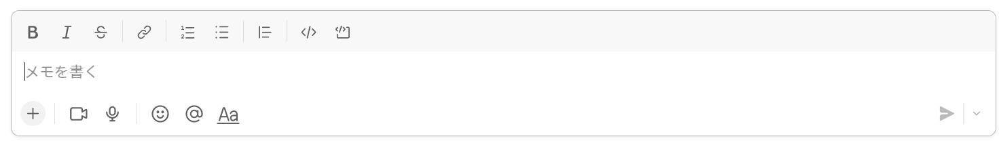

Notion->Slack変換はこちらから
Slack -> Notion 変換
このサイトの使い方
1. スケマネだよりのメッセージをコピーする
2. コピーしたものをSlackのテキストボックス（画像）に貼り付け

※この処理を飛ばすと上手く行かないので注意！
3. 貼り付けたメッセージをコピーする
4. 左側のテキストボックスに貼り付けて変換
5. 右側のテキストボックスに出た文章をNotionに貼り付け
6. | 入力してください... を削除
これを使うメリット
- ある程度まとまった区切りを行うので、手動の修正が楽になります
- スタンプコピー対策済みなので、削除が楽になります（スタンプの位置に「＄」が入ってます）
※もしNotionでもスタンプを挿入したい場合は「/emoji」と打てば挿入できます
注意事項
- タイトル、バリュー設定、画像挿入は各自でお願いします
- 太字、コードブロック、引用符は手動で追加して下さい
- Notion -> Slack は対応してないです（今後作成予定）
- スケマネバリューのスタンプが使えないので修正して下さい
- URLはNotionの機能で貼り付けた方が綺麗になります
- 半日で作った突貫品なのでバグが起きる可能性大
※問題や要望が有ればシロクマのたいちゃんの方に連絡下さい！
テストページ